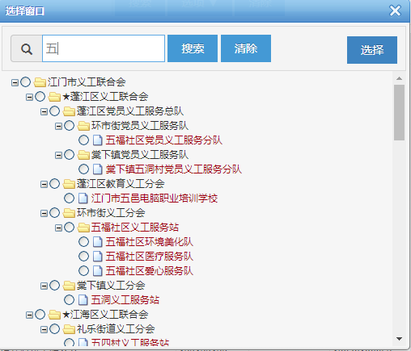
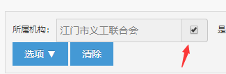

前言
实习正好一个多月，现在回顾一下这一个月都干了什么收获了什么。
第1星期
第1星期主要是上级校验我动手做东西的能力。
头2天熟悉公司的规章制度，接下来就分派下了一个仿照现有功能的任务，包括前后端。要求在第一个星期内完成，也就是我需要在剩余的3天半内完成，本来认为任务挺简单的，数据库，现成 Demo 也在，除了任务描述的不是特别清晰外，其他都自我感觉良好，然后就开启了趟坑之路。
后端问题
技术栈要求：Struts2、Spring、Jdbc。
因为没用过 Struts2，所以经过和上级协调后我换成了 Spring Boot + JdbcTemplate。（要及时与上级沟通）
数据库是 Oralce 的，但以前没有用过，而且 Maven 怎么也下载不了 Oracle JDBC 的驱动，经过一番折腾后写出了这篇笔记：使用 Docker Oracle。
关于 JdbcTemplate 的使用参考了 Spring JdbcTemplate方法详解，在本任务里就是单纯的查询结果集。
值得注意的是对结果集的操作，如果查出来的是实体，可以直接使用 new BeanPropertyRowMapper(Bean.class)，比如 jdbcTemplate.query(FIND_ALL, new BeanPropertyRowMapper(MemberBean.class)) 避免对 resultMap 一个个地进行映射。
基本上后端搭建方面就是上面的两个问题，以下是关于业务方面的问题解决。
业务问题

一开始因为不会树查询，所以在看完表结构后做成了由 Java 控制的递归查询：
- 1 一级义工分会：跳过
- 2 一级服务总队：向上 SELECT 一次 WHERE id = parentId
- 3 二级义工分会：~2次
- 4 二级服务总队：~3次
- 5 基层义工组织：~4次
递归查询上层机构，最后按 List 输出。
在查询的机构比较靠上层，以及机构数据量不大时，上面的递归查询时间还可以接受，但是数据稍微多点就异常缓慢，甚至让人觉得卡顿。在咨询了上级后才知道还有树查询这种方法，搜索后发现了一篇比较好的关于 Oracle 树查询的文章。（请教经验丰富的上级，得出相关的解决方法）
同样的还有下面这个，也是树查询解决：

照葫芦画瓢，写出了这样的查询语句：
1 | SELECT dept.name, dept.id, dept.parentId, LEVEL |
结果证明，查询速度比原来的方法快多了。
其他关于前端控件的问题，基本按照文档说明即可解决。
总结
第一个星期接触到了 Oracle 数据库，搭建过程中加深了我对 docker 的使用印象，业务上的树查询也让我认识到了自身对数据库的熟练度还不够的问题，需要加强练习。
任务在星期四下午就完成了，上级对完成速度、功能完整度以及额外完成的导出 Excel 功能都比较满意，也算是对自己的认可了。
接下来的一天多时间里，在得到了经理的允许下，把电脑换成了 Linux，看了几篇关于 Spring Cloud 的文章。
第3-4星期
第2星期前4天完成了几个关于 Spring Cloud 组件的使用及 Demo，写了相关的笔记：Spring Cloud。
然后星期五上级就分派了一个移动端的子模块开发任务给我，原本是想让我前后端都进行做的，但因为原型问题，以及我表达了对前端并不十分熟练的问题后，我的任务就变成了纯后端开发。
第3-4星期这期间，我主要就是和原先 PC 端的同事进行交流，对接业务逻辑，编写业务代码和相关的文档接口，编写时用到了 Java8 的函数式编程思想，基控制器的装饰器模式，以及熟练了 MyBatis。
第5星期
第5星期基本的接口都已经写完了，前4天主要是写单元测试，和完善整个接口文档中的业务流程。在接近尾声时也让上级看了下我上面写的 Spring Cloud 笔记，所以估计接下来的几天里要搭建好 Spring Security OAuth2 的 Demo。
总结
这一个月里主要的收获就是折腾出了使用 Docker Oracle。以及 Spring Cloud 相关的笔记：Spring Cloud，熟练了 Java 开发部署流程，加强了与团队的沟通配合能力。